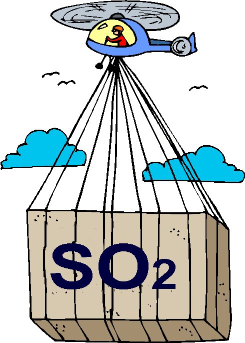
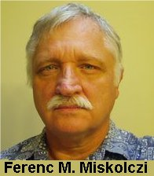

| 11 Février 2013 : Table des billets de PU : Comme promis (ici), j'ai mis en place une table ordonnée d'une grande partie des billets rédigés pour PU depuis la fin 2006, c'est à dire depuis la mise en place de Pensee-Unique.fr. Bonne lecture à toutes et à tous. |
||
Les théories sur le réchauffement planétaire sous la loupe Les média, les écologistes et les politiques tendent à accréditer l'idée que l'affaire est entendue : Le réchauffement global proviendrait de l'effet de serre engendré par le CO2 que nous envoyons à profusion dans l'atmosphère, disent-ils... Mais au fait, sur quelles "certitudes" scientifiques reposent ces affirmations ? Pour vous aider à vous forger votre propre opinion qui n'est pas nécessairement celle de la Pensée Unique , l'auteur vous prend par la main et vous explique aussi simplement que possible les forces et les faiblesses des théories du réchauffement climatique en présence. Car, il n'y en pas qu'une, loin de là ! Et, au moins, une des autres théories contredit gravement la Pensée Unique... Vous trouverez aussi ici des informations sur les articles scientifiques les plus récents, dont beaucoup mettent en défaut le fameux modèle d'effet de serre. Cette rubrique est constamment tenue à jour. |
Paroles de grands chercheurs On vous répète sans cesse que les grands prophètes du réchauffement climatique comme le GIEC, ont l'aval de milliers de chercheurs les plus compétents, que leurs évaluations sont indépendantes et sans appel, qu'il y a un consensus, etc... Et vous le croyez, bien sûr! Beaucoup des plus grands chercheurs dans ces domaines ne sont pas d'accord avec ce que l'on vous raconte, pas plus d'ailleurs que plusieurs experts officiels du GIEC, jusqu'à son Vice Président. Stupéfiant ! |
Pour ceux qui veulent suivre les événements , voici les "Grands Indicateurs du Climat" actualisables au quotidien et tous extraits des données officielles ! Cette page vous donnera accès aux différentes mesures présentes et passées des températures, à l'état précis des mers glacées des pôles Sud et Nord, aux relevés des températures et du niveau des océans ainsi qu'aux données sur les grands paramètres des océans (indices PDO, ENSO etc.). De même, vous saurez tout ou presque sur la situation présente de notre disque solaire en matière d'irradiance totale ou de cycles éruptifs. Enfin, vous aurez accès aux fameuses courbes officielles de Mauna Loa du taux de CO2 et de CH4 dans l'atmosphère. Toutes ces données sont extraites des meilleurs sites officiels et sont actualisables en fonction des dernières données accessibles. Ne vous laissez plus "balader" avec des chiffres fantaisistes ! Profitez-en ! |
C'est le refroidissement qui nous guette Sous ce titre, un rien provocateur en cette époque où les écologistes se sont successivement doré la pilule au soleil de Bali, et gelé à Poznan, se cache une solide réalité scientifique : de nombreux et éminents chercheurs ont proposé des explications alternatives et convaincantes au réchauffement bénin de +0,6°C qu'a connu notre planète en deux épisodes successifs (1850-1940 et 1978-1998), tout comme d'ailleurs aux épisodes précédents de l'histoire de la planète. Leurs explications reposent sur l'observation directe des phénomènes naturels ...et non pas sur les projections hasardeuses des ordinateurs de l'effet de serre du GIEC. On ne vous en parle jamais même si ces explications convaincantes sont émises par des chercheurs renommés et experts dans leurs domaines. Et de fait, elles dérangent : Elles prévoient unanimement... |
Le prix d'honneur du bonnet d'âne Les déclarations fracassantes vont bon train de nos jours qui visent à effrayer l'opinion publique pour des motifs pas toujours avouables. Certaines de ces déclarations dépassent les limites du tolérable. Elles méritent d'être mises à l'honneur. Cette rubrique totalement désintéressée a pour mission de coiffer du célèbre bonnet d'âne cher à nos écoles d'autrefois, ceux qui se distinguent dans le domaine de l'outrance et que les médias répercutent à qui mieux mieux. De nos jours, le niveau de compétition est très élevé ! Certains ont placé la barre vraiment très haut tout comme leurs prédécesseurs l'avaient fait, il y a quelques années (chronique : le bêtisier).Il vaut mieux en rire... quoique, parfois... |
Le témoignage du climatologue Richard Lindzen sur le fonctionnement actuel de la science climatique
|
Sept bonnes raisons de douter de l'effet de serre anthropogénique. Voici, sous forme de résumé, et parmi beaucoup d'autres, sept très bonnes raisons de douter de ce que vous racontent les médias, Al Gore, les écologistes, les politiques désinformés et le bureau du GIEC sur le réchauffement climatique soi-disant "anthropogénique". L'histoire du climat de la planète jusqu'au temps les plus reculés, l'examen du recul des glaciers et de la montée des eaux, les "preuves" incontournables qui ne se trouvent pas et surtout, l'existence d'une alternative beaucoup plus crédible que les projections invérifiées des modèles d'ordinateurs du GIEC, tout cela nous conduit à nous poser des questions...Si, malgré l'avalanche des déclarations péremptoires vous assurant que le débat est clos, vous avez des doutes sur la Pensée Unique, n'hésitez pas ! |
05/10/2009 : La méthode scientifiquePour garder le sourire... quand même, j'ai emprunté à un jeune chercheur américain, étudiant en Thèse (PhD) un petit diagramme amusant et très révélateur sur la manière dont nos jeunes chercheurs perçoivent la méthode scientifique telle qu'elle doit être pratiquée de nos jours compte tenu des impératifs auxquels ils sont assujettis. |
 En matière de réchauffement climatique, les remèdes risquent d'être bien pires que les conséquences... Les alarmistes du GIEC et les écologistes, politiques et autres Al Gore, Hulot, Stern qui inquiètent les populations viennent d'ouvrir la boite de Pandore des recherches pour modifier le climat. Cela s'appelle la Géoingénierie. De nombreux pays essayent de trouver des moyens pour contrer le réchauffement, paraît-il, inéluctable. Si vous ne craignez pas de perdre le sommeil, ça vaut le détour ! |
Les pôles fondent-ils vraiment ? Où en sont les océans ? Les glaciers ? Et le permafrost ?
|
Les Calamités ! On vous rebat constamment les oreilles avec les nouvelles les plus alarmistes (et infondées) comme sur les ouragans et les sécheresses et les hausses du niveau des océans, existants ou à venir. Tout cela vous empêche de dormir. Les porte-coton du GIEC attribuent tout et absolument tout ce qui arrive à notre bonne et vieille planète, au réchauffement climatique...Et même ce qui n'arrive pas. Cela va de l'humeur des souris et des cougars à l'effondrement d'un pont sur le Mississipi... Bien sûr, la Science ne peut pas tout vérifier. Néanmoins, en ce qui concerne les calamités présentes ou a venir, elle a, le plus souvent, son mot à dire et, de fait, les découvertes récentes démentent sèchement les affirmations péremptoires proférées par les apôtres du réchauffement climatique anthropique. |
Le réchauffement climatique(mis à jour le 26/12/2007)
|
La Nature a plus d'un tour dans son sac pour s'adapter aux variations de température ! Ainsi, lorsqu'ils reçoivent un ensoleillement excessif, les planctons des océans émettent du sulfure de diméthyle propre à fabriquer des nuages pour limiter l'ensoleillement comme viennent de le découvrir des chercheurs espagnols. De même, une quantité de plantes (choux rouges, lotus, ginko biloba etc.) secrètent de la pruine pour limiter l'evaporation en période chaude et sèche.Cette pruine a des propriétés quasi-magiques.De plus, on vient de montrer (en juin 2008) que les feuilles des arbres modifient leur constitution pour maintenir une température constante (21,4°C) idéale pour la photosynthèse...Très malins nos chers petits planctons, nos choux rouges et nos arbres! Ils en savent plus sur la physique que la plupart de nos climatologues, et notamment ceux qui utilisent la dendrochronologie. |
25/03/2007 : L'Europe de la Science |
|
Le bêtisier (Mis à jour le 15/01/09 )
Il est très instructif d’exhumer quelques unes des déclarations fracassantes proférées, dans un passé récent par nos prévisionnistes qu’ils soient scientifiques, politiques, journalistes ou écrivains. Cela nous permet de relativiser et de replacer dans un contexte historique les affirmations péremptoires, proférées dans les mêmes termes qu’autrefois mais démenties par les faits, de certains de nos penseurs actuels. D'autre part, l'histoire des erreurs passée est instructive.
|
Mais pourquoi imposer la Pensée Unique ? (mis à jour le 04/08/2008) Beaucoup de lecteurs de ce site m'ont posé cette question et certains s'alarment : Alors, vous croyez qu'il y aurait un complot mondial ? Non, rassurez vous cher(e) leur(trice) ! Je ne crois pas au complot mondial ! Il s'agit tout simplement d'une convergence d'intérêts bien compris (et souvent divergents) pour différentes corporations qui espèrent tirer bénéfice de votre crédulité, soigneusement créée et entretenue. Lisez cette page et vous serez rassuré(e)s . Enfin, peut-être... |
01/2007 : Le Vrai et le faux On vous rebat les oreilles avec des affirmations alarmistes de toute sorte : nous allons être submergés, nous allons crever de chaud et mourir de faim sur le petit bout de terre qui émergera encore etc. L'auteur est allé puiser aux meilleures et aux plus récentes sources de nos connaissances scientifiques pour rétablir la vérité sur tous ces racontars qui ne visent qu'à vous effrayer pour que vous agissiez dans le sens de la Pensée Unique. Les racontars, les bobards et l'intox que vous servent tous les jours, les journalistes mal informés ou orientés ne peuvent rien contre les récentes découvertes de la science... qu'ils ignorent ! Réagissez et informez vous ! |
Mais qu'est ce qui réchauffe la planète ?
|
L'effet de serre remis en question par plusieurs physiciens théoriciens 
Plusieurs éminents physiciens remettent gravement en question les fondements même de la théorie classique de l'effet de serre, utilisée par les ordinateurs pour les scénarios (prédictions) du GIEC. |
20/11/2009 : Trois bonnes présentations synthétiques sur le Climat (en français, en pdf ) et une excellente présentation en anglais.
|
12/2006 : Autrefois, les planctons ont survécu et se sont adaptés au CO2 (Science, Décembre 2006) : Certains "prévisionnistes" affirment que les poissons auront disparus du globe en 2048 ! parce que, selon eux, le plancton des océans sera éliminé du fait de l'excès de CO2 dans l'atmosphère |
4/10/2007 : Des chercheurs canadiens de "Friends of Science" ont réalisé un petit film (accessible ici) très pédagogique, accessible à tous et sous-titré en français.
Cette vidéo vous expliquera très simplement beaucoup de choses qu'il faut savoir sur le réchauffement climatique actuel et notamment pourquoi la thèse de l'effet de serre du CO2 atmosphérique est mise en défaut face aux observations expérimentales et à nos solides connaissances du climat de la planète depuis des temps très reculés.
Franchement, |
12/12/09 : Bonne nouvelle ! Un dessinateur (et historien) professionnel talentueux a décidé de participer (bénévolement) à l'illustration du site Pensee-Unique.
|
|
Le Manuel du Sceptique de Joanne Nova a été traduit en français par une équipe du site Skyfal. Très pédagogique, il constitue une ressource essentielle pour entamer et poursuivre une discussion sur ce sujet...Indispensable ! |
03/2007 : Le fameux documentaire "The great global warming swindle" ou "La grande arnaque du réchauffement climatique" existe maintenant en version sous-titrée (un peu brève...) en français. |
Le rapport du NIPCC (indépendant du GIEC , non gouvernemental) a été traduit en français. Il est à votre disposition ici (en pdf 1,84Mo).
|
|
|
22 Juin 2011 : Des livres francophones...Sans comparaison avec la très riche littérature anglophone sur ce sujet, les livres francophones remettant en question les tenants et aboutissants du Réchauffement Climatique Anthropique étaient très rares, il y a peu. Les années 2008, 2009 et 2010 ont vu la parution de plusieurs ouvrages remarquables francophones sur ce sujet. |
 !...
!...